Engineering Bone Material Onto a 3D Printing Platform
For senior design, our eight-person team adapted the open-source OASIS binder-jet platform to print bone scaffolds using RevBio's Tetranite material. Tetranite is a bioactive injectable adhesive that hardens in place, making it promising for minimally invasive bone repair and implant support.
The starting printer was too small for the client's intended scaffold sizes, so the platform had to be scaled up and redesigned around the material handling, powder containment, and tolerance realities of mostly 3D-printed hardware.
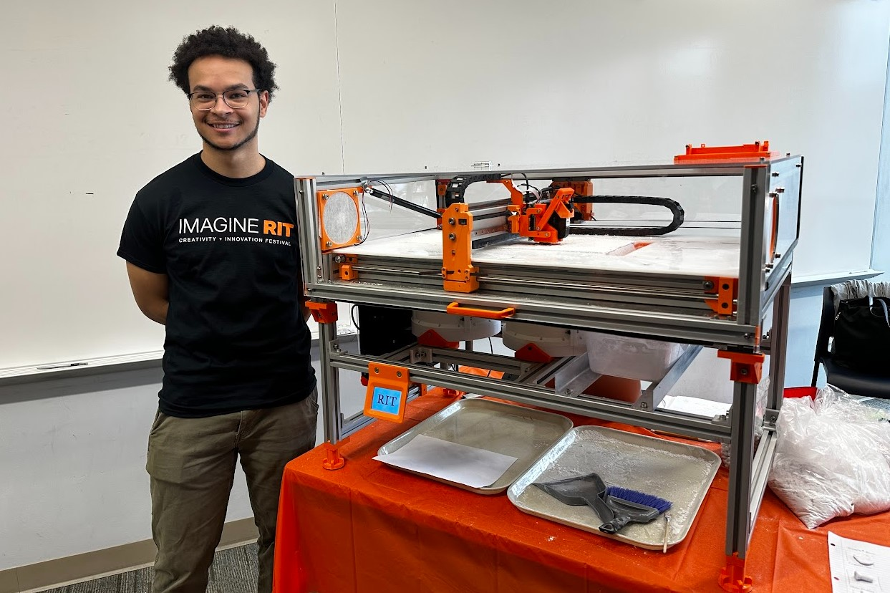
The CAD model became the coordination tool for every subsystem interface: scaled frame members, printhead travel, recoater clearance, the enlarged powder bed, and service access around the Z-axis. My main ownership was the Z-axis sub-assembly, base plate, piston head, and sleeve system.
Compared with the original OASIS concept, the redesigned printer increased the usable build area while keeping fabrication costs down through FDM parts and off-the-shelf motion hardware.
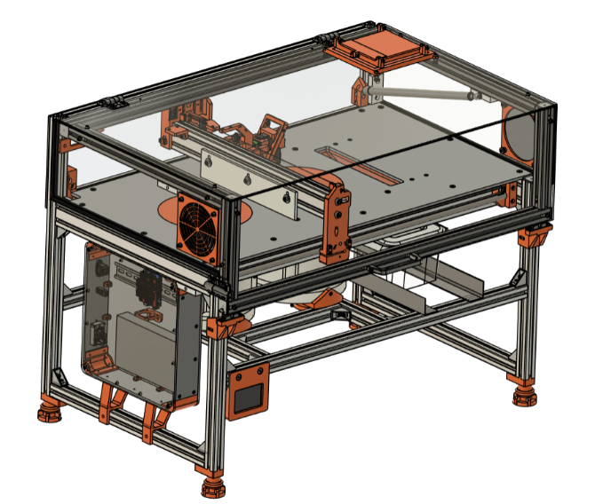

Binder jetting selectively deposits a liquid activator onto a thin layer of Tetranite powder. The powder particles bind wherever the activator lands, then a new powder layer is spread and the process repeats until the scaffold is complete.
Because both slicer settings and material properties affect the final structure, the printer needed smooth Z motion, repeatable powder-layer geometry, and enough build volume to support the client's scaffold experiments.
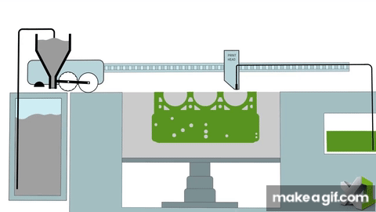
Z-Axis Redesign
The original print bed and powder reservoir were too small for RevBio's requirements, so the Z-axis had to scale by roughly 75%. That exposed the core design problem: tolerance stack-up in FDM parts gets worse as the printer gets larger.
The original sleeve did not leave enough room for manufacturing and assembly variation when scaled up. During testing, the piston head bound against the sleeve and resisted linear travel, creating inconsistent Z-axis motion.
Rather than forcing every printed part to be perfect, the redesign needed to tolerate small alignment errors and still move cleanly. Although machined components would resolve these issues, price and lead times were a big constraint for the project.
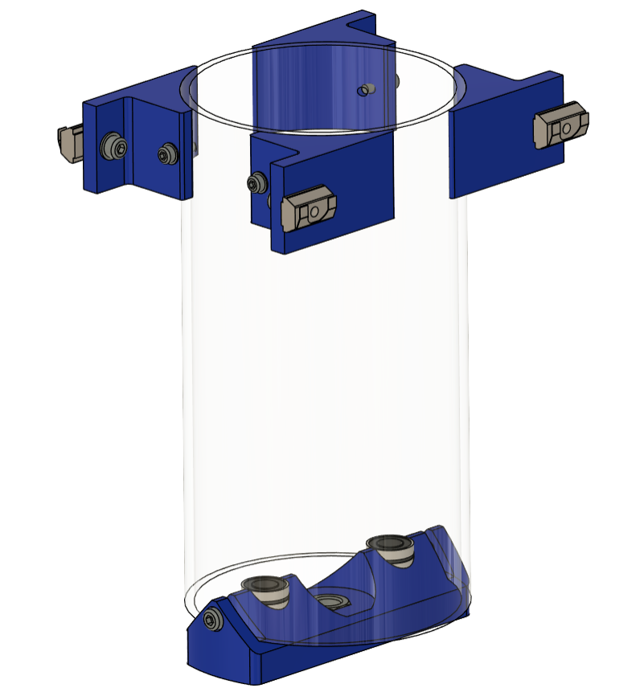
I redesigned the z-axis around a compliant coupling that can pivot slightly about two axes. That small motion accommodates imperfections from printed parts and assembly without adding precision-machined bearing mounts.
The result was lower cost, fewer sensitive interfaces, and much smoother piston travel through the Z-axis stroke.
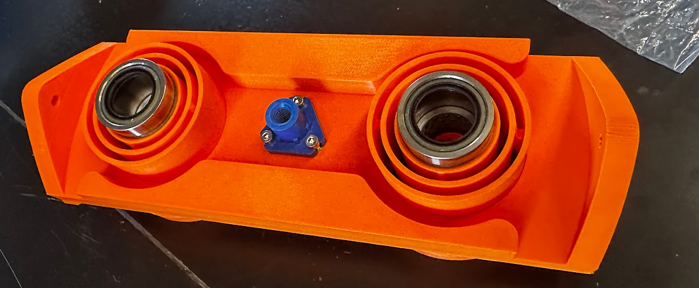
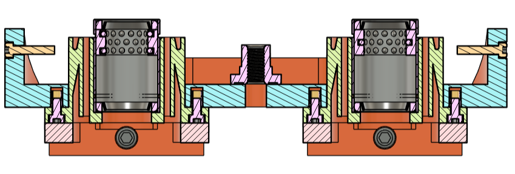
Flexure absorbs angular misalignment in two rotational DoF - exactly the failure mode precision mounts existed to prevent. No bearings to wear, zero backlash.
Eliminated precision-machined mounts entirely. Significantly reduced cost and assembly complexity while improving Z-axis linear motion quality.
Piston Outer Sleeve Redesign
The outer sleeve was originally based on an off-the-shelf UHMW tube because the material offered strong chemical resistance and the listed dimensions matched the design. In practice, the tube did not meet the advertised dimensional accuracy and was slightly elliptical.
That small shape error was enough to create friction, fitment issues, and another tolerance stack-up problem in the piston assembly.

My first solution was an expandable wedge inserted into the tube to stretch the inner diameter toward the target geometry. Because the polymer rebounds after deformation, the wedge could be oversized to compensate for elastic recovery.
The second version wrapped more of the circumference, but the approach still could not hold the precision needed for reliable piston motion.
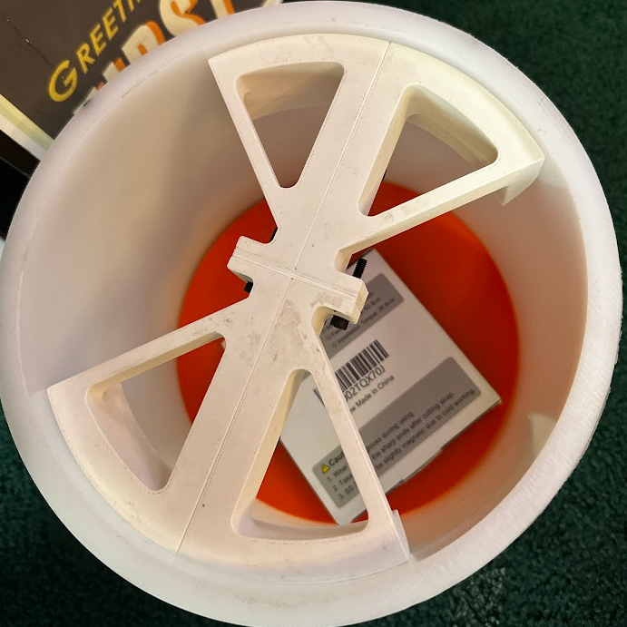
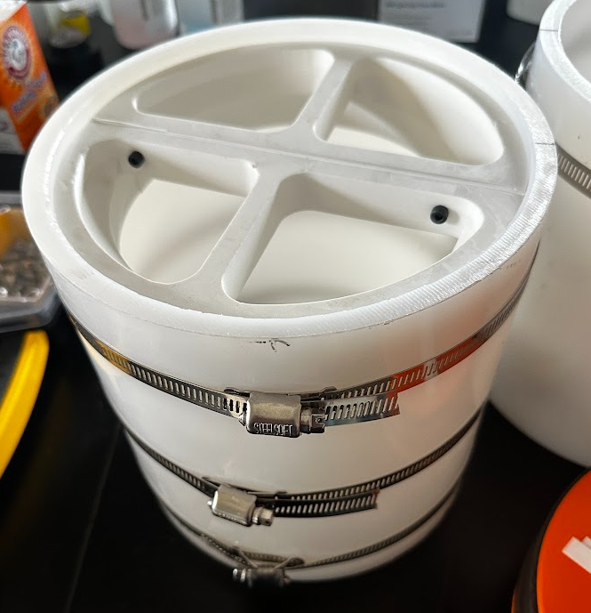
After the wedge concepts failed to meet precision requirements, I redesigned the sleeve as a fully 3D-printed split assembly. Shims can be inserted between the two halves to tune the final dimension after printing.
That adjustability matters in prototyping: it saves time, avoids repeatedly reprinting large parts, and lets the assembly be tuned around real hardware instead of ideal CAD dimensions.
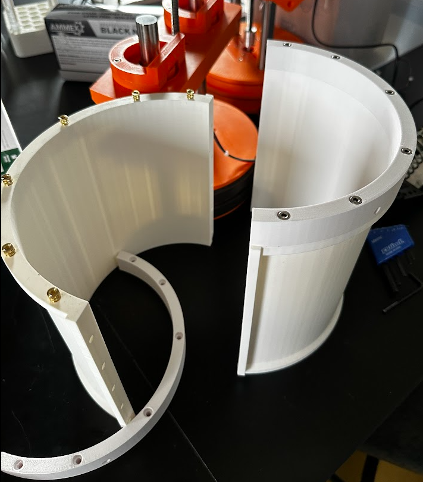
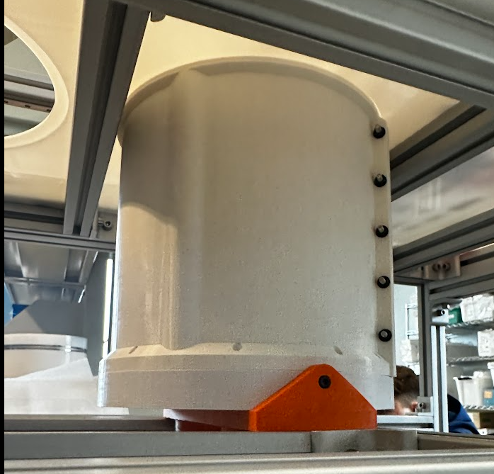
Piston Head & Drive Sizing
The original piston head raised and lowered the build volume and powder reservoir, but it was too small for the scaled printer. I sized a new design using length-to-diameter ratio checks to keep the piston stable under load.
The redesign preserved smooth vertical travel while supporting the larger powder volume needed for RevBio's scaffold experiments.
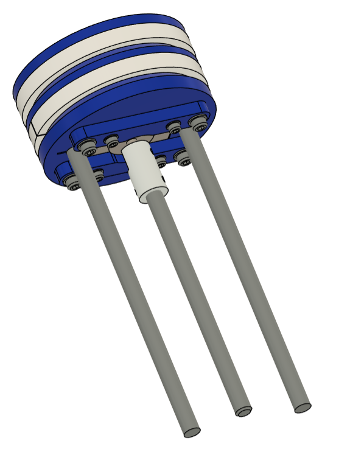
The new piston head uses a stronger stepper motor and a finer-pitch lead screw for greater torque multiplication and finer Z-axis resolution. A flexible coupling aligns the lead screw with the lead nut, reducing sensitivity to small angular offsets.
The section views also show how the motor is packaged inside the piston head to keep the mechanism compact and serviceable.
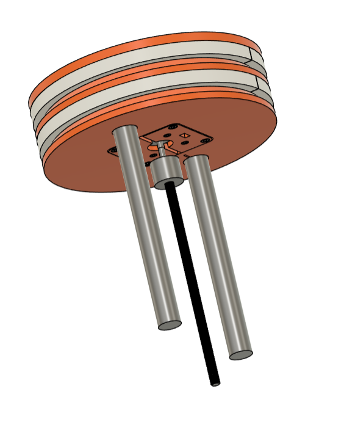
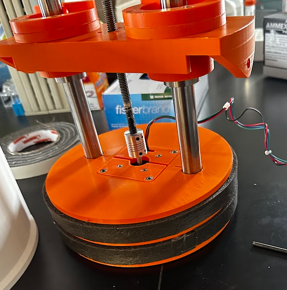
Base Plate & Serviceability
The original Z-axis mounting configuration was redesigned for robustness and accessibility. I created an H-frame that supports the underside of the pistons while allowing the assembly to be removed more easily for maintenance.
The base plate was pocketed on the underside to improve positional repeatability, so service work could happen without losing the alignment the printer depends on.
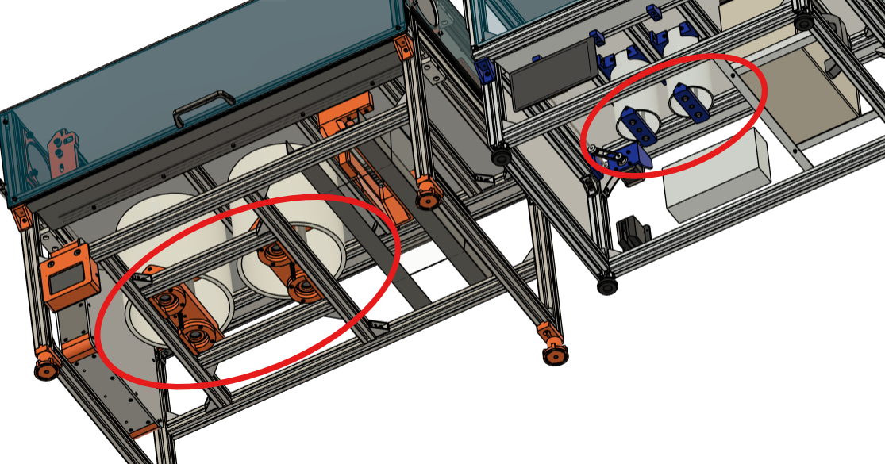
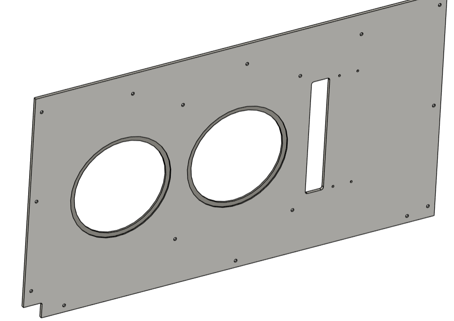